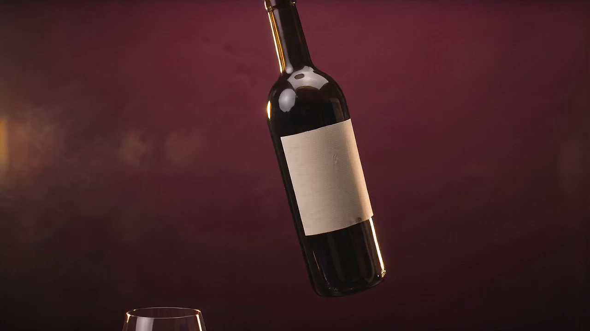

200
Dont 80 % du Roussillon
Vignerons indépendants, domaines familiaux et quelques belles découvertes d'ailleurs.
200 vins, 450 bières et 150 spiritueux sur 400 m². Huit vins sur dix viennent d'ici.

Chaque référence a été goûtée avant d'entrer en rayon. La sélection change au fil des saisons et des arrivages.
200
Vignerons indépendants, domaines familiaux et quelques belles découvertes d'ailleurs.
450
Brasseries catalanes, belges, anglaises et américaines, en bouteille et en fût.
150
Pour la dégustation, pour un cocktail ou pour un cadeau qui fera date.
Un dîner, un apéritif, un cadeau, une grande tablée.
Léger ou charpenté, sec ou fruité, classique ou nature.
Il y a de très belles bouteilles à tous les prix.
On vous fait goûter au bar quand c'est possible.
Sélection à mettre à jour chaque mois par l'équipe.
Ce site parle de vin, de bière et de spiritueux. La vente d'alcool est interdite aux mineurs.
Revenez nous voir à votre majorité. En attendant, la programmation culturelle est ouverte à tous.
L'abus d'alcool est dangereux pour la santé, à consommer avec modération.